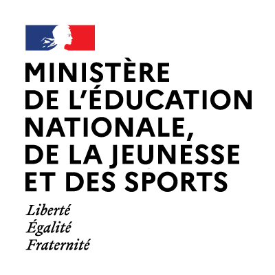
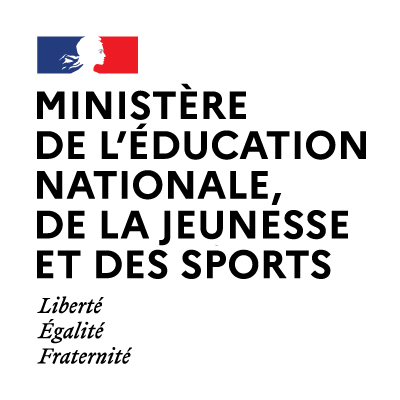

Le concours Alkindi est une compétition de cryptographie ouverte aux classes de 4e, 3e et 2de. Il est organisé par les associations Animath et France-ioi. La participation est entièrement gratuite.
Le concours 2021-2022 comporte deux premiers tours accessibles sans sélection. Une phase de préparation permet ensuite de se qualifier au troisième tour, à l’issue duquel les 20 meilleures équipes accèdent à la finale.
Pour plus de détails sur le déroulement des tours, consultez le manuel du concours.
L'organisation est très simple. Vous pouvez à tout moment devenir coordinateur/coordinatrice sur coordinateur.concours-alkindi.fr. Vous pouvez inscrire vos élèves jusqu'à la fin du premier tour.
L'inscription doit passer par un·e enseignant·e de votre établissement. Parlez du concours à vos enseignant·e·s et transmettez-leur l'adresse concours-alkindi.fr.
La sécurité des données numériques et de leur transmission est un des enjeux majeurs de notre société, que ce soit pour sécuriser les transactions bancaires ou garantir la protection de la vie privée. L'objectif du concours est de montrer aux élèves que les mathématiques et l’informatique permettent de comprendre les outils utilisés dans ce domaine.
Nous souhaitons faire découvrir aux élèves cette application très concrète des mathématiques, qui joue un rôle fondamental dans leur vie quotidienne. Nous voulons les faire réfléchir, de façon ludique, aux fondements mathématiques, informatiques et logiques de la cryptanalyse. Enfin, nous souhaitons les sensibiliser à la question importante de la sécurité de l’information.
Ce concours rentre dans le cadre de la Stratégie mathématiques et du plan École numérique du Ministère de l’Éducation nationale.
Tou·te·s les élèves scolarisé·e·s en 4e, 3e ou 2de dans un établissement français.
Les élèves d'autres classes peuvent faire les épreuves des deux premiers tours.
Pas du tout. Au contraire, c’est le principe ! Ce concours s’adresse à des personnes qui n’ont jamais fait de cryptanalyse. Lors des épreuves en temps limité, toutes les informations nécessaires seront contenues dans le sujet.
Le concours est accessible à tou·te·s les élèves de quatrième, troisième et seconde. Lors de la première épreuve, ouverte à tou·te·s, chaque question comporte trois versions de difficulté croissante. Ainsi, chaque participant·e peut s’amuser à résoudre des défis adaptés à son niveau et découvrir les principes de base de la cryptographie. Pour le deuxième tour, il s'agit aussi surtout de faire preuve de persévérance et de bien travailler en équipe.
Pas nécessairement, certains problèmes font appel à certaines notions de fin de collège, mais les mathématiques ne sont pas la principale difficulté.
Il n’y a pas de prérequis autres que le programme de collège. Venez avec l’esprit ouvert, faites preuve de logique et suivez les consignes. Et surtout amusez vous !
Nous offrons à chaque membre des trois meilleures équipes nationales un kit Raspberry Pi accompagné d'une carte QuickPi, dans l'objectif d'encourager les gagnants à l'apprentissage de la programmation.
Les autres équipes finalistes gagneront un livre sur les thèmes de la cryptographie, de l'informatique et des mathématiques.
Les membres des 20 meilleures équipes nationales ainsi que de la meilleure équipe de chaque académie gagneront une invitation à visiter un laboratoire de cryptographie, sous réserve que les conditions sanitaires le permettent.
 


En apprendre plus sur les organisateurs, sponsors et partenaires du concours Alkindi.
Pour faire connaître le concours dans votre établissement, n'hésitez pas à imprimer et diffuser notre affiche ! L'affiche de l'édition 2021-2022 est téléchargeable ici. Vous pouvez retrouver les affiches des éditions précédentes dans la rubrique épreuves précédentes.
Vous pouvez également relire la bande dessinée associée au concours.
Al Kindi est un savant arabe du IXe siècle qui s'est intéressé à de nombreuses sciences, allant de la géométrie à la médecine et à la chimie. Dans le « Manuscrit sur le chiffrement des messages cryptographiques », il explique comment casser les meilleurs codes connus à son époque, à l'aide de la technique de l'analyse de fréquence. C'est la première trace connue de cryptanalyse. Par conséquent, il est considéré comme l'un des fondateurs de la discipline.